A complete operational guide to YMSNOW — covering all modules, the gate-to-gate workflow, and the three-tier intelligence system: Standard, Assist, and Optimize.
YMSNOW is a production-grade Yard Management System designed for distribution centers, warehouse operators, 3PLs, and logistics-intensive facilities that need complete, real-time visibility and control from gate arrival to gate exit.
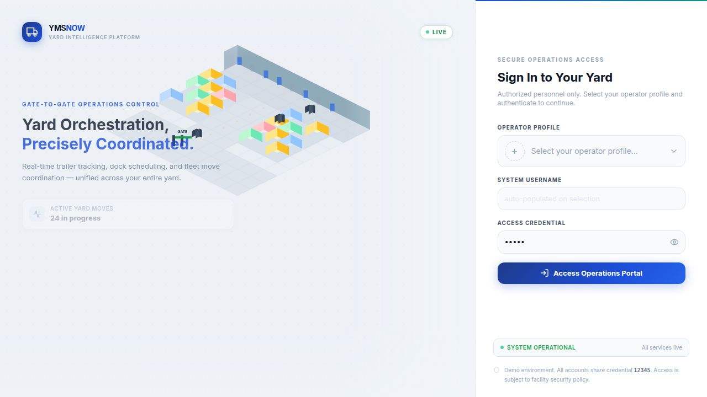
Modern distribution centers operate dozens of trailers, dock doors, yard jockeys, and carrier appointments simultaneously — often with no single source of truth. Trailers arrive without slots, docks sit idle while trailers age in the yard, and exceptions go unresolved for hours while staff use radios and spreadsheets to coordinate.
YMSNOW replaces fragmented coordination with a unified, real-time operational platform. Every trailer, every dock door, every appointment, every exception, and every yard move is tracked, visible, and actionable from a single interface.
Full operational oversight — dashboard KPIs, exception resolution, dock assignment, jockey dispatch, and mode switching between Standard, Assist, and Optimize.
Process inbound arrivals, verify drivers, take photos, assign yard slots, and issue gate passes. Check-out clearance verification at exit.
Monitor dock utilization, track loading and unloading progress, manage SLA compliance, and drag trailers between doors.
Receive move tasks on the Yard Moves queue, execute trailer repositioning assignments, and log completions in real time.
YMSNOW operates in three distinct product modes, allowing facilities to adopt the level of AI and automation that fits their operational maturity:
Modes can be switched live from the top header bar without reloading. All data and manual workflows remain available in every mode.
YMSNOW is organized into five navigation groups — Operations, Workflow, Compliance, Analytics, and Administration. All modules are accessible from the persistent left sidebar.
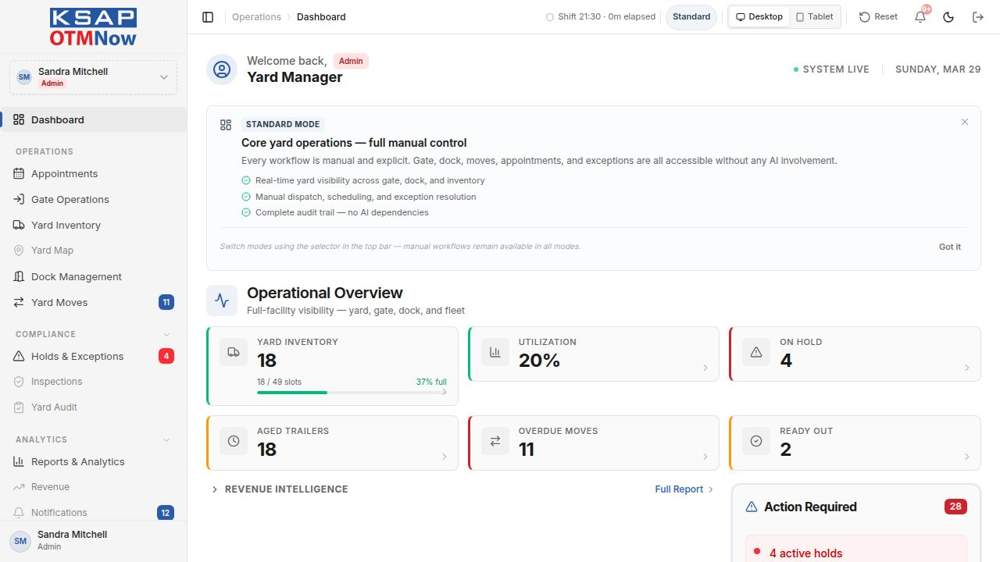
Real-time KPI tiles: yard inventory, utilization, holds, aged trailers, overdue moves, and ready-out count. Action Required panel surfaces all items needing attention.
All ModesCalendar and list view for inbound and outbound trailer appointments. Supports Day / Week / Month views, type filtering, and direct appointment creation.
All ModesCheck-In and Check-Out tabs on a single screen. Step-by-step workflow: Find Visit → Verify Driver → Photos/Seal → Assign or Hold → Gate Pass.
All ModesLive tabular list of all trailers currently on site. Columns: visit, trailer, carrier, location, status, time on yard, last update, next step. Filterable by status, zone, and carrier.
All ModesLive SVG map of the entire yard. Three-panel layout: Operational Queue (left), Map Canvas (center), Slot Detail (right). Pan, zoom, drag-to-move, and zone filters.
All ModesKanban board showing dock doors across Available, At Dock, Loading, and Unloading columns. SLA breach alerts with drag-to-reassign. Schedule view for planning.
All ModesJockey task queue — Unassigned, Assigned, In Progress, and Completed tabs. Create moves, assign jockeys, and track execution in real time.
All ModesLive list of all active holds: customs, security, documentation, damage. Severity classification (Critical / High / Medium). One-click Resolve workflow.
All ModesAI parses inbound carrier emails to extract shipment references, detect conflicts with existing appointments, and surface supervisor alerts automatically.
Assist + OptimizeTrailer inspection records — physical condition, seal verification, documentation review. Linked to gate check-in workflow.
All ModesPhysical yard walk record — periodic slot verification against live system data. Flags discrepancies between physical count and system inventory.
All ModesOverview, Carrier, Dock, Move Tasks, and Revenue & Billing tabs. KPIs: avg dwell time, yard occupancy, dock utilization, on-time arrivals, hold rate. Export CSV / PDF.
All ModesDetention billing, carrier charge tracking, and revenue opportunity identification. Surfaces accruing detention charges in real time on the dashboard.
All ModesEvery trailer that enters the facility follows a structured journey from pre-arrival appointment to final gate exit. YMSNOW tracks every stage of this journey and surfaces it across the relevant modules.
Carriers or dispatchers create appointments before arrival. Each appointment captures: carrier, trailer number, appointment type (inbound / outbound / live load / live unload / empty drop), scheduled time, and PO or reference number.
The appointment calendar provides Day, Week, and Month views with color-coded appointment types. Late, No Show, and Confirmed status filters help dispatchers manage day-of scheduling.
When a truck arrives, the gate guard searches by appointment number, trailer number, or driver name. The system walks through a four-step process:
On completion, a gate pass is issued and the trailer appears immediately in Yard Inventory and on the Yard Map.
The trailer is parked in its assigned slot within the appropriate yard zone (Inbound Staging, Outbound Ready, Reefer Row, Live Load/Unload, or Inspection Hold). Yard Inventory shows its live position, dwell time, and next step. The Yard Map shows its slot on the interactive map with real-time status color.
A yard move task is created — either manually by a dispatcher or automatically suggested by the AI (Assist / Optimize modes). A jockey is assigned and moves the trailer from its yard slot to a dock door. The move is tracked in the Yard Moves queue with real-time progress updates.
While at a dock door, the trailer status changes to Loading or Unloading. Dock Management shows the real-time status of all 10 dock doors. SLA timers monitor dock duration and flag Over SLA breaches. Supervisors can drag trailers between dock columns or reassign doors.
When dock activity is complete, the trailer is marked Ready Out. It may return to a yard slot (outbound staging) before exit, or proceed directly to gate check-out. The Ready Out count is visible on the dashboard and in Gate Check-Out's "Expected Check-Outs" list.
The gate guard searches the trailer and steps through: Find Visit → Verify Unit → Check Clearance → Confirm Exit → Issue Exit Pass. The system verifies no outstanding holds block exit. A QR scan code is also supported for faster processing. Once confirmed, the visit is closed and the slot becomes available.
Standard Mode is full manual control — every workflow is human-driven, every decision is explicit, and no AI is involved. It delivers complete real-time visibility without any AI dependency.
Designed for facilities that want a reliable, transparent operational platform with no automation or AI dependency. Every gate, dock, move, and exception is handled by yard staff with full system support.
In Standard Mode, the mode badge in the top header reads Standard. The AI assistant panel is hidden. Email Intelligence is accessible but shows no AI-parsed alerts. No recommendation banners or AI suggestion overlays appear on any page. The Dashboard mode banner explains the operational model to new users.
Standard Mode gives full access to the entire operational platform — every module is available. The difference from Assist and Optimize is only the absence of AI recommendations and automated suggestions. Dispatchers make all decisions manually, with full system data to support those decisions.
Assist Mode keeps humans in control of every decision while surfacing AI suggestions, alerts, and insights alongside manual workflows. It is designed for teams ready to accelerate decisions without removing oversight.
The AI surfaces dock assignment suggestions, move prioritization insights, carrier email alerts, and exception detection — but all decisions remain with your team. Every AI recommendation can be accepted or overridden.
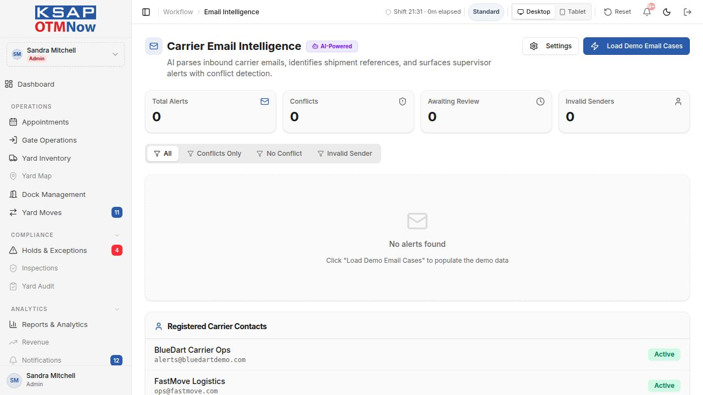
In Assist Mode, the AI operates as a decision-support layer. It reads operational data in real time, applies rule-based and ML models, and surfaces the results as visible recommendations — not automatic changes. Every suggestion requires human confirmation.
In Assist Mode, the mode badge reads Assist. The AI Copilot assistant button appears in the lower-right corner of the screen. Email Intelligence shows AI-parsed alerts and conflict flags. Recommendation banners may appear on Dock Management and Yard Moves pages. The Dashboard surfaces AI-identified action items alongside standard holds and overdue moves.
Optimize Mode enables the full AI engine. The system proactively recommends dock assignments, sequences move tasks, identifies detention risk, and surfaces optimization insights across the entire yard operation.
The complete AI-powered yard experience. Every layer of the platform — gate, yard, dock, moves, and exception management — is augmented with optimization intelligence. Designed for high-throughput facilities running at scale.
In Optimize Mode, the mode badge reads Optimize. All Assist Mode AI surfaces are active, plus additional optimization panels appear across Dock Management, Yard Moves, and the Dashboard. The AI Copilot has expanded context including optimization recommendations and carrier scoring.
In all three modes — Standard, Assist, and Optimize — the system never performs irreversible actions automatically. The AI surfaces recommendations, the operator approves. This maintains full human accountability and compliance traceability regardless of mode.
A visual tour of the platform's most-used operational screens, showing how each module supports the day-to-day work of yard management teams.
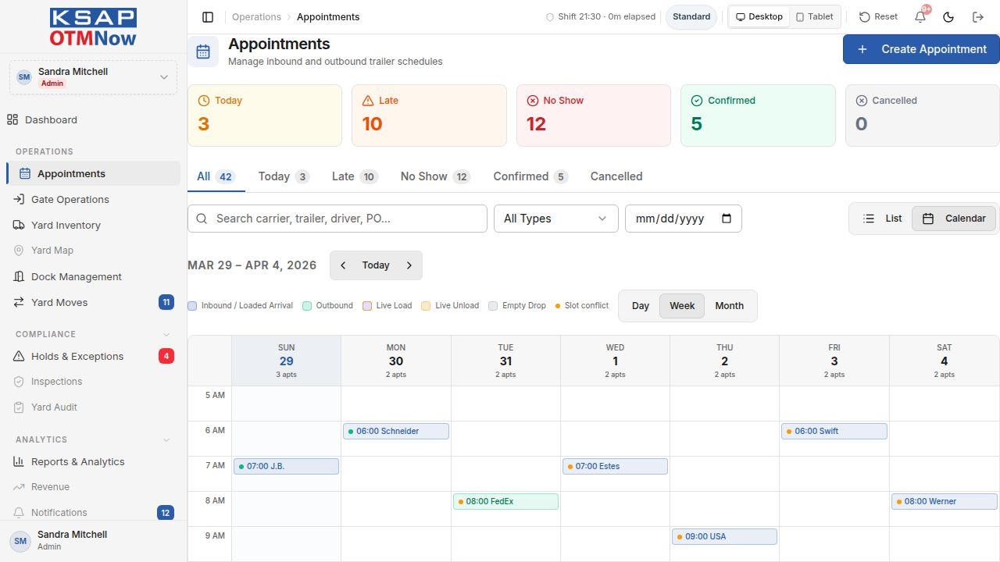
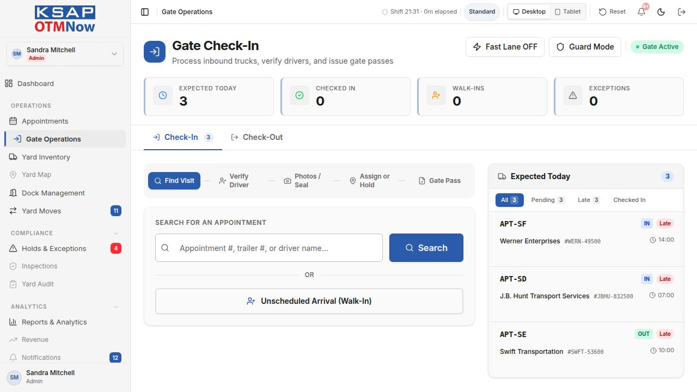
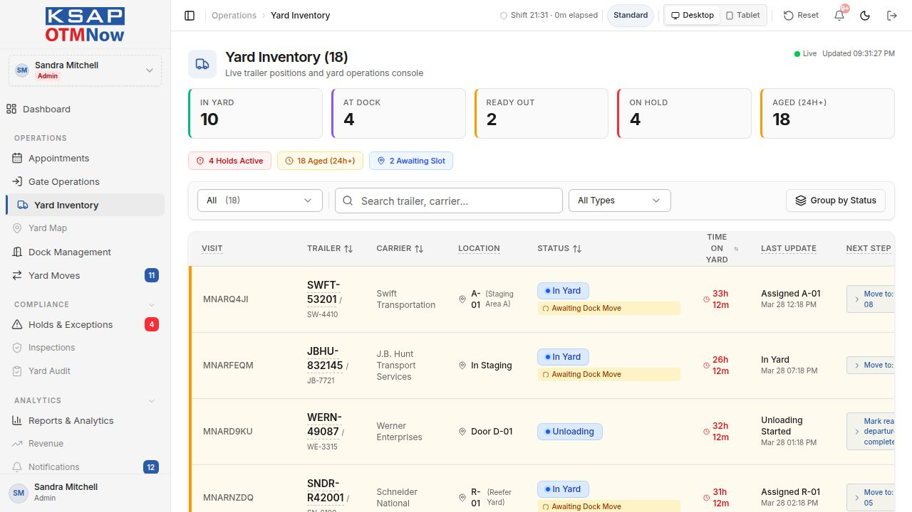
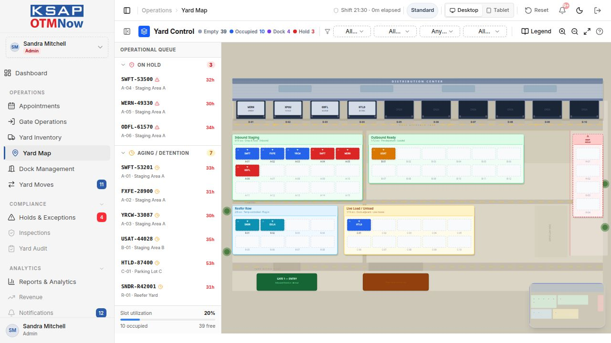
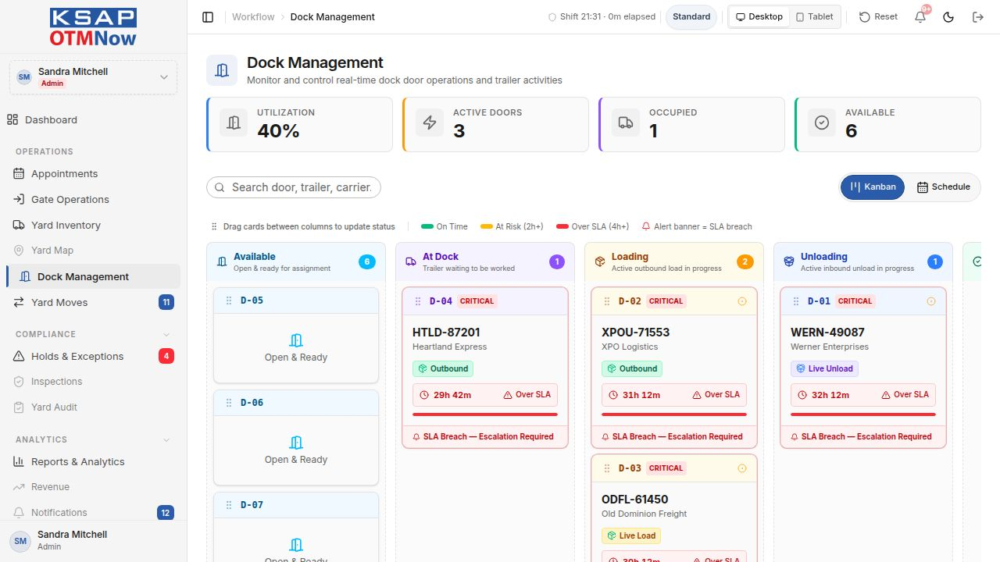
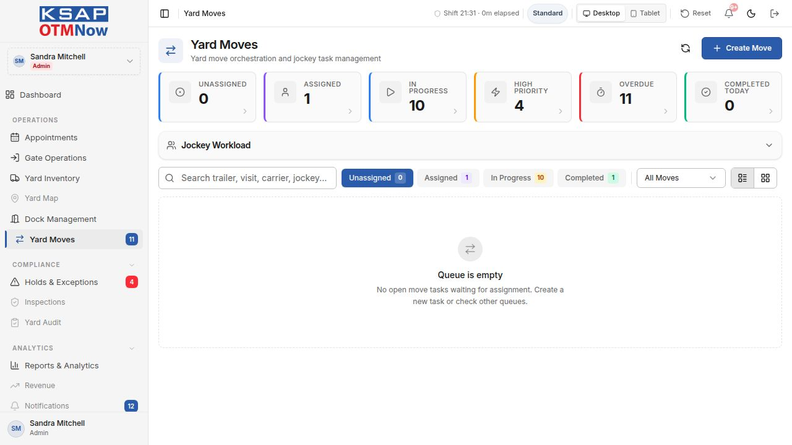
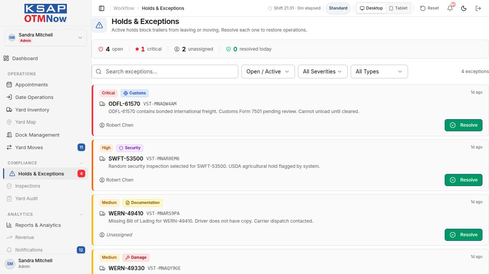
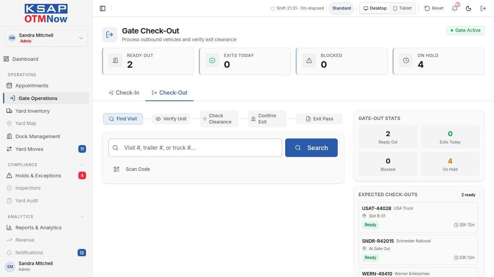
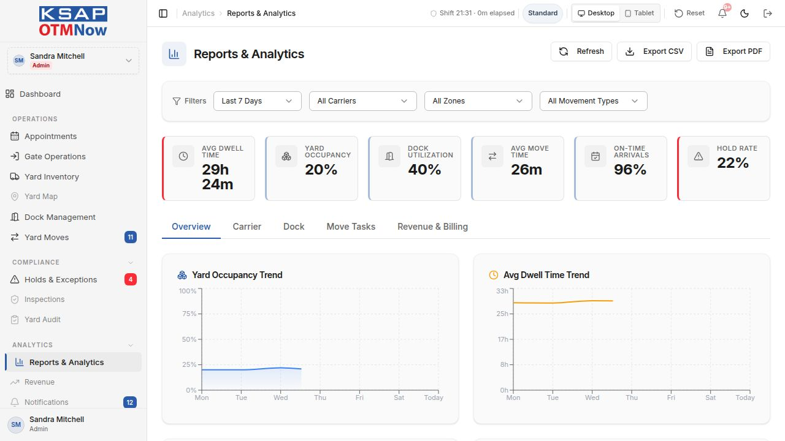
A step-by-step example of how a single inbound trailer moves through the YMSNOW platform — from appointment creation to gate exit — showing which screen handles each stage and where AI adds value in Assist and Optimize modes.
| Step | Action | Who | Screen | AI in Assist/Optimize |
|---|---|---|---|---|
| 1. Pre-Arrival | Carrier books appointment for inbound load. Appointment confirmed with time window, trailer number, and PO reference. | Carrier / Dispatcher | Appointments | ✦ Email Intelligence parses carrier confirmation emails and flags conflicts automatically |
| 2. Gate Arrival | Truck arrives at Gate 1. Guard searches by appointment number or trailer ID. Driver verified, photos taken, seal recorded. | Gate Guard | Gate Check-In | ✦ AI checks for documentation holds and prior visit history; flags discrepancies before slot assignment |
| 3. Slot Assignment | Guard assigns the trailer to a yard slot in the Inbound Staging zone. Trailer appears instantly on the Yard Map and in Yard Inventory. | Gate Guard | Gate Check-In → Yard Map | ✦ AI recommends the optimal slot based on load type, planned dock door, and current yard congestion |
| 4. Yard Staging | Trailer parks in the Inbound Staging zone. Dwell clock starts. Slot status shows "In Yard — Awaiting Dock Move". Dispatcher monitors via Yard Inventory. | Yard Jockey | Yard Inventory / Yard Map | ✦ AI monitors dwell time and surfaces the trailer in the Aging/Detention queue when approaching the SLA threshold |
| 5. Dock Assignment | Dispatcher assigns a dock door and creates a move task. The jockey is dispatched to move the trailer from its slot to the assigned dock door. | Dispatcher | Dock Management / Yard Moves | ✦ AI suggests the optimal dock door based on load type (Receiving vs Shipping), current door utilization, and appointment window |
| 6. Move Execution | The jockey picks up the move task from the Yard Moves queue, executes the move, and marks it complete. The dock door status updates to "At Dock". | Yard Jockey | Yard Moves | ✦ AI prioritizes the move queue automatically when multiple moves are pending, based on dock SLA risk and appointment time |
| 7. Dock Activity | Trailer transitions to Loading or Unloading status on the dock kanban. SLA timer runs. Dock staff monitor progress and update status as work progresses. | Dock Staff | Dock Management | ✦ AI flags predictive SLA breaches before they occur, allowing proactive reallocation |
| 8. Exception (if any) | If a hold is triggered (customs, damage, documentation), the trailer is flagged in Holds & Exceptions. The hold blocks gate exit until resolved by an authorized user. | Supervisor / Guard | Holds & Exceptions | ✦ AI identifies potential holds from email content before the trailer arrives at the gate |
| 9. Ready Out | When dock activity completes, trailer status changes to Ready Out. It appears in Gate Check-Out's expected list. Dispatcher may move it to Outbound Ready staging if dock-to-gate sequencing is needed. | Dispatcher / Dock Staff | Yard Inventory / Yard Map | Standard flagging; AI in Optimize can sequence outbound departures to reduce yard congestion |
| 10. Gate Exit | Truck arrives at Gate 3. Guard verifies trailer, checks for clearance (no outstanding holds), confirms exit, and issues the exit pass. Visit is closed. Slot is freed. | Gate Guard | Gate Check-Out | ✦ AI verifies all holds are resolved before allowing clearance confirmation |
YMSNOW delivers measurable operational improvements across dwell time, dock utilization, exception resolution speed, and carrier accountability — from day one in Standard Mode, with compounding returns as AI capabilities are unlocked.
Real-time slot tracking, dock sequencing, and proactive aging alerts prevent trailers from sitting unmanaged in the yard.
Coordinated dock assignment, SLA enforcement, and move task dispatch eliminate idle door time caused by coordination gaps.
Holds surface immediately with full context, assigned resolver, and one-click resolution — replacing radio calls and paper logs.
Every trailer action, hold, move, and gate event is logged with a timestamped audit trail — supporting compliance, disputes, and carrier SLAs.
YMSNOW is the only YMS with a structured Standard / Assist / Optimize tier system, allowing facilities to adopt AI at their own pace without switching platforms. The mode selector is live, instant, and non-disruptive.
The Yard Control map renders a true DC yard environment — Gate 1 Entry, Gate 3 Exit, Dock Approach Lane, Inbound Staging, Outbound Ready, Reefer Row, Live Load/Unload zones, and RECEIVING/SHIPPING dock splits. Users recognize it as their yard, not a generic placeholder.
Every AI recommendation in Assist and Optimize modes requires human confirmation. The AI never makes irreversible changes unilaterally. This maintains compliance, accountability, and operator trust — a critical requirement in regulated or carrier-facing environments.
Every major operational page — Dashboard, Appointments, Gate Operations, Yard Map, Dock Management, Yard Moves, and Exceptions — has a dedicated 10-inch tablet layout. The Desktop / Tablet toggle in the header switches all adapted pages simultaneously, with no per-page configuration required.
YMSNOW tracks detention time from the moment a trailer enters the yard. Detention billing signals surface on the dashboard in real time — helping facilities capture revenue that is often lost due to poor tracking and late documentation.
Standard Mode operates fully offline from any AI or external service. All core gate, dock, inventory, and move workflows are self-contained. AI features in Assist and Optimize require API connectivity but never block the core operational platform.
YMSNOW is production-ready and deployable as a web application accessible from any modern browser — on desktop workstations at gate booths, wall-mounted displays for dock supervisors, and 10-inch tablets for yard jockeys and gate guards. No native mobile installation is required.
12345. The system can be reset to demo state at any time using the Reset button in the header.
| Role | Primary Modules | Mode Recommendation |
|---|---|---|
| Yard Manager / Admin | Dashboard, all modules, Reports, AI Config | Optimize (or Assist during transition) |
| Gate Guard | Gate Check-In, Gate Check-Out, Inspections | Standard (Guard Mode available) |
| Dock Supervisor | Dock Management, Yard Inventory, Yard Moves | Assist or Optimize |
| Yard Jockey | Yard Moves (tablet view) | Standard (tablet layout) |
| Operations Analyst | Reports & Analytics, Revenue, Audit Log | Any mode (read-only analytics) |
| Carrier Representative | Carrier Portal (separate login) | Read-only — appointment and visit visibility only |